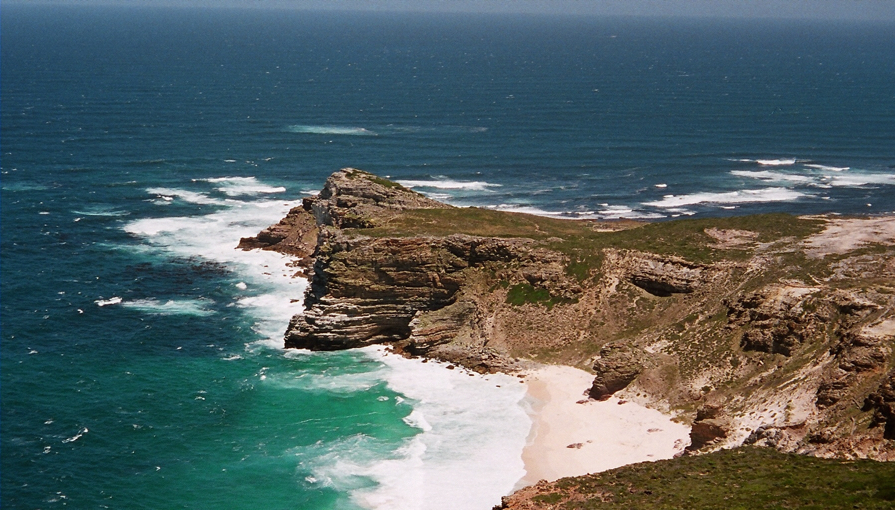
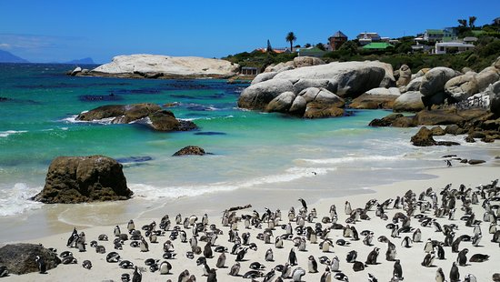
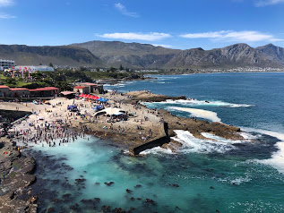
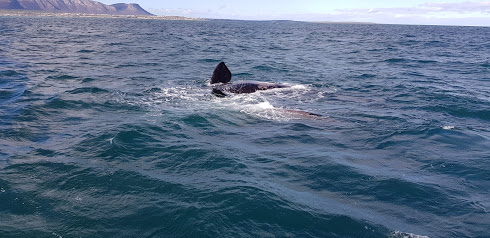
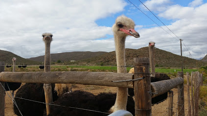
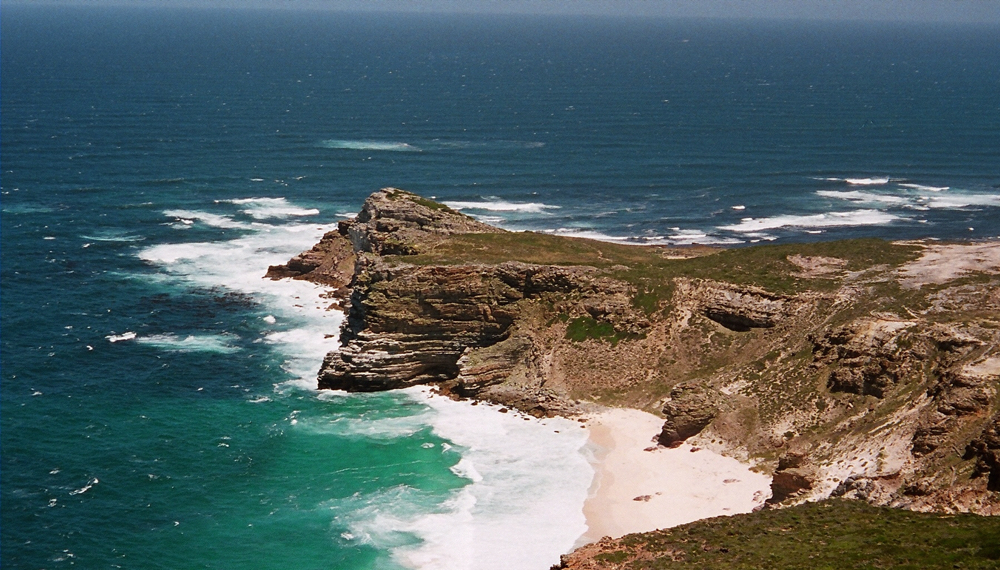
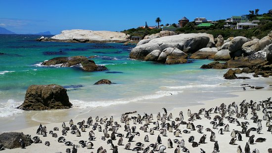
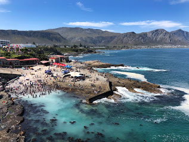
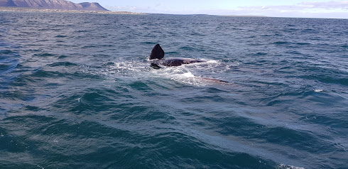
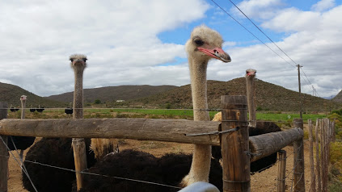

Western Cape

The Western Cape is a South African province with coasts bordering the Indian and Atlantic oceans. It's known for the port city of Cape Town, set beneath Table Mountain, part of a national park of the same name. In Table Bay, Robben Island is the notorious prison that once held Nelson Mandela, and is now a living museum. Farther afield, winelands surround historical towns like Stellenbosch, Franschhoek and Paarl.
South of Cape Town, rugged cliffs rise above the ocean at the Cape of Good Hope, home of the the Cape Point nature reserve, with an 1859 lighthouse. To the east is Hermanus, a coastal town that's known for whale-watching. A popular course for road trips is the Garden Route, which runs between the town of Heidelberg to just beyond Plettenberg Bay. On the route are forests, lakes and towns like Knysna, host of an annual oyster festival, popular golf courses and a lagoon. On the province's west side, the Cederberg Wilderness Area shelters many rock paintings by the indigenous Khoisan people, some thousands of years old.

 










Click here for more info on the Western Cape